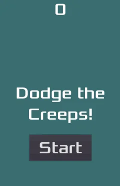

Tricat released!

Tricat, the first game of the challenge is live! A Flappy Bird clone built in Godot, inspired by a beloved three-legged cat. Tricat must jump between brooms to gain score, falling into a broom will not end well!
Try it out on itch.io: https://problem-18.itch.io/tricat
First game
Tricat is the first game of the challenge. A Flappy Bird clone, with a small twist on the theme. In this case it being a black cat that has to avoid brooms with a purple and starry background representing the night. The player has to jump using their mouse button or space to keep the the cat afloat and avoiding the brooms.
How I started
I started off by going through the engine's documentation first. Getting to know what design principles, key concepts and interfaces are in store for me.
After the introduction, I followed the excellently written tutorial on how to create your first 2D game. This involved using pre-made assets, writing code, and research the workflow of scenes and nodes. A smooth experience that allowed me to easily step into the world of Godot, at least regarding 2D.
Tricat
First mistake: Sitting down, saying "Time to work on the first game!", and realizing that I actually had no idea what I want to make. I mean sure, it's a flappy bird clone.. but what? Well, luckily someone gave me a suggestion!
The game's theme was inspired by a cat belonging to someone very close to me, this poor cat only has three legs (but zooms around like a demon regardless).
The same person actually hinted me towards the direction of what the game's theme should be. "A black cat being hunted by a witch on a broom at night".
Sounds cool but..
What immediately stuck is that imagining, and talking about a game idea is easy. However, then it clicks that every single movement, every single sound and gameplay mechanic is something that has to be created from scratch, every time. Quite daunting but I did not let that overwhelm me.
I opened up Notion, created some pages where I basically copy/pasted the requirements set in the 20 games challenge, and so I could easily have a checklist of what is to be done. This allowed development to be much less overwhelming, and having the game done in small, incremental steps allowed me to quickly get started, and finished too.

What about the actual creation?
The art was done using Aseprite which I had purchased quite some time ago and never really used. It was overwhelming at first but this excellent tutorial by YouTuber Saultoons explained Aseprite to me enough to get started.
Sound effects were a totally new area for me. I installed Audacity, and just recorded some random noises using my own mouth. It was silly, it was funny, and damn, it was an adventure! I must say, Audacity is so simple to use, it's so cool that it's free.
In the end, all it took was making some random noises, who knew!
Biggest hurdles
Collisions and types
Lots of time went into figuring out and puzzling. Should the little cat be a RigidBody2D (let physics do the work)? Perhaps a CharacterBody2D (handle control and movement myself through scripting)? After all, it is our character, and it is a character we want to control. Turns out that CharacterBody2D was the right call for me.
Same thing for the brooms, after hours of tinkering and more puzzling, I settled on Area2D's that just move to the left.
Oh my god, why are they not colliding?!
— Me
It took tinkering and time for me to understand how bodies and areas work between each other, whether it's okay and efficient to have an Area2D move to the left while a body comes into it's CollisionShape2D. I quickly found out that this worked just fine, actually.
Spawning of brooms
Another big one was the spawning of the brooms with a random position on the y-axis. We want to spawn them in a certain distance from each other, while also randomizing keeping the height of the gap at different spots. Otherwise, the game would be very simple and just spawn the exact same brooms, with the exact same distance and position every time.
So I created a new scene that contains two brooms, I set up a script that would put a distance between them. In a parent node, another script determined the height of this new scene, and that way it did exactly what was necessary.
Oh, and the spawning was determined by a Path2D and just choosing a random location.
Here's a snippet of some of the code used.
# Put distance between the two brooms
$UpperBroom.position.y -= distance
$LowerBroom.position.y += distance
# Spawn set of brooms at random location of Path2D
var obstacle_set := obstacle_scene.instantiate()
var spawn_location = $ObstaclePath/ObstacleSpawnLocation
spawn_location.progress_ratio = randf()
obstacle_set.position = spawn_location.position
add_child(obstacle_set)
What I learned
At the end of the day, the game wasn't the most difficult to create. Due to my experience and knowledge of coding, I was able to get a quick prototype going and it rolled off the hill easily after that.
I was very excited to have had finished, as I heard more than enough that actually finishing a game is the hardest part of game development. While the game perhaps is small, it was still a big achievement for me personally.
For the next game, Keybricks, I brought along the following lessons:
- Godot's documentation is absolutely golden, and I will keep using it first.
- Have a concrete idea of the game's theme before you actually start working.
- GDScript, Aseprite & Audacity basics.
- How collisions between areas and bodies work.
That's all! ❤️
Try Tricat and let me know what you think!

I want to read more!
It'd be my honor!
- Keybricks released!: My second game about hitting key caps!
- About me and Problem 18: Explanation of me and Problem 18!